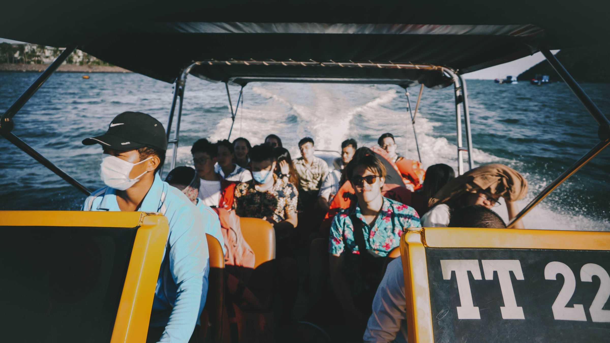
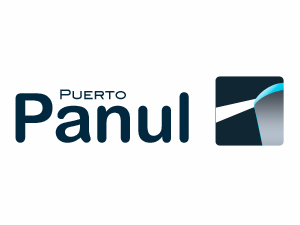
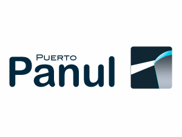

PRENSA
VER MÁS NOTICIAS
11 DE ENERO
Puerto San Antonio alcanza nuevo máximo histórico al transferir más de 22 millones de toneladas

05 DE ENERO
Puerto San Antonio continúa con su programa de visitas guiadas a la bahía
VIENTO 3.10 km VISIBILIDAD 3.49 Mn OLEAJE 1.39M h1/3 11.68 STP
Ver más fotos y videos
TONELADAS MOVILIZADAS TOTALES
EN PROYECTOS MEDIOAMBIENTALES
Comprometidos con nuestros vecinos, el medio ambiente y el desarrollo sustentable de nuestra comuna
Estudio de avifauna en las lagunas de Llolleo y la desembocadura del río Maipo
Paseo Bellamar, principal atractivo turístico del borde costero
Organización y apoyo en actividades culturales de relevancia en nuestra comuna
18 DE ENERO
Además, durante 2017, los concesionarios del puerto movilizaron casi 1.296.890 contenedores
CONTINUAR LEYENDO >
11 DE ENERO
Puerto San Antonio alcanza nuevo máximo histórico al transferir más de 22 millones de toneladas
05 DE ENERO
Puerto San Antonio continúa con su programa de visitas guiadas a la bahía
En Puerto San Antonio (17/02/19), el Crucero Seven Seas Explorer, de 224 metros eslora y bandera de Islas Marshall, se encuentra desde ayer en el concesionario Puerto Central, con Zarpe programado para hoy a las 18 Hrs. #SanAntonio #ElPuertodeChile
Fotos: @RubenJeriaH
#cruceros #verano #Chile #cruiseship #port #cruises
Síguenos también en:@puertosantoniopuertosantonio
| LICITACIÓN PÚBLICA SAI 01/2019 |
Resumen especificaciones técnicas para el desarrollo de tarea de mantención preventiva sistema VCMOC | ALCANCE PUBLICACIÓN |
| LICITACIÓN PÚBLICA SAI 19/2019 |
Diseño, implementación y mantención sitio web corporativo Empresa Portuaria San Antonio | ALCANCE PUBLICACIÓN |
| LICITACIÓN PÚBLICA SAI 19/2019 |
Contratación de servicios de mantención preventiva y arriendo de equipos para CCTV de la Empresa Portuaria San Antonio | ALCANCE PUBLICACIÓN |
 
